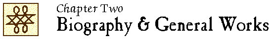

John Locke Chronology |
John Locke Manuscripts |
John Locke Resources |
John Locke Bibliography | ||

|
1676-1700 1705-1750 1751-1800 1801-1850 1851-1900 |
1901-1910 1911-1920 1921-1930 1931-1940 1941-1950 |
1951-1960 1961-1970 1971-1980 1981-1990 1991-2000 |
2001-2005 2006-2010 2011-2015 2016 2017 |
 2011
2011
Anstey, P. R. & Principe, L. M.
“John Locke and the case of Anthony Ashley Cooper.” — See entry in Chapter 9.
“Locke’s children.” — See entry in Chapter 4.
Starting with Locke / Greg Forster. – London ; New York : Continuum, ©2011.
ISBN 978-1-847-06582-7.
Review: P. Sheridan, Locke studies. 12 (2012):285-291; T. Ölmez, Bilimname : düşünce platformu 2017:issue 34:615-620.
LS 11:5
“Roger Stuart Woolhouse (1940-2011)” / Roland Hall. // IN: Locke studies. — 11 (2011):13-15.
“Locke’s last days” / J. R. Milton. // IN: Locke studies. — 11 (2011):123-138.
LS 12:7
“The unscholastic statesman : Locke and the Earl of Shaftesbury” / J. R. Milton. // IN: Anthony Ashley Cooper, First Earl of Shaftesbury, 1621-1683 / edited by John Spurr. — Farnham, Surrey, England ; Burlington, VT : Ashgate Publishing Company, ©2011. — p. 153-182.
LS 11:8
Lôka / Dīpti Śarmā, Ema. Kumāra. – 1 saṃskaraṇa. – Naī Dillī : Arjuna Pabliśiṅga Hāūsa, 2011. – 264 p.
In Hindi.
ISBN 978-81-833-0267-8.
Unverified.
Great philosophers who failed at love / Andrew Shaffer. – New York ; London : HarperPerennial, ©2011.
See “John Locke (1632-1704)” (p. 108-112)
“L’œuvre des premiers traducteurs français de John Locke : Jean Le Clerc, Pierre Coste et David Mazel” / Delphine Soulard. // IN: XVIIe siècle. – 2011/4 = no 253:739-762.
2012
“Locke’s swallows” / Peter Anstey. // IN: Early modern experimental philosophy. – June 18, 2012 [blog post].
Available online at: https://blogs.otago.ac.nz/emxphi/2012/06/locke-swallows/ (viewed 15 July 2012)
“Digital editing and the eighteenth-century text : works, archives, and miscellanies” / Paddy Bullard. // IN: Eighteenth-century life. – 36 (2012):57-80.
“David Lloyd Thomas (1932-2012)” / Alan Haworth. // IN: Locke studies. – 12 (2012):11-15.
God, civil war, and heresy : England in the 17th century / Stewart Kelly. – [Minot, N.D. : Minot State Univeristy, Division of Humanities, 2012]. – 1 videodisc [DVD] (ca. 60 min.) : sound, colour. – (Northwest Art Center lecture series)
Lecture presented by Stewart Kelly, Aleshire Theatre, Minot State University, February 1, 2012.
See “The writings of philosopher John Locke at the end of the century.”
Unverified.
Locke / by A. J. Pyle. – Cambridge : Polity, 2012. – 223 p. – (Classic thinkers)
ISBN 978-0-745-65066-1; 978-0-745-65067-8 (pbk.)
LS 13:10
“ ‘Lovers of truth’ in Pierre Bayle’s and John Locke’s thought” / S.-J. Savonius-Wroth. // IN: The intellectual consequences of religious heterodoxy, 1600-1750 / edited by Sarah Mortimer and John Robertson. – Leiden ; Boston : Brill, 2012. – (Brill’s studies in intellectual history ; volume 211). – p. 155-180.
LS 12:8
“Anglo-French cultural transmission : the case of John Locke and the Huguenots” / Delphine Soulard. // IN: Historical research. – 85 (2012):105-132.
LS 12:9
“John Locke” [in Stanford encyclopedia of philosophy]. – See entry under first publication in 2001.
“Locke’s Letters Project” / lead, Claude Willan ; advisor, Dan Edelstein. Start date, September 2012. // IN: Mapping the republic of letters. – [Stanford, CA] : Stanford University Press, ©2013.
“This project will visualise the communities that Locke communicated with, and show the connections within those communities.”
Available online at: http://republicofletters.stanford.edu/casestudies/locke.html (viewed June 20, 2016)
For results of the project, see Willan, “John Locke” [2013?] and Willan, “Locke data” [2013?]
Review: C. Medici, Renaissance and reformation 42:no. 4 (2019):180-184.
2013
Fire and light : how the Enlightenment transformed our world / James MacGregor Burns. – New York : St. Martin’s Press, ©2013. – ix, 388 p.
Politicizing the Bible : the roots of historical criticism and the secularization of scripture, 1300-1700. – See entry in chapter 7.
John Locke, philosopher of the Enlightenment / Patrice Sherman. – [Huntington Beach, Calif.] : Teacher Created Materials, 2013. – 32 p.
Locke’s life and time for children.
Unverified.
“Locke and his influence” / Timothy Stanton. // IN: The Oxford handbook of British philosophy in the eighteenth century / edited by James A. Harris. – Oxford : Oxford University Press, 2013. – p. 21-40.
LS 14:15
“John Locke” / Graduate researcher, Claude Willan, Stanford University. – GitHub, [2013, updated 2016].
Project description, with links to visualizations of Locke’s correspondence network and graphs of the religious affiliations of Locke’s correspondents.
Available online: https://github.com/claudewillan/JohnLocke/ (viewed 2 June 2017)
For other descriptions of the project, see Willan, “Locke’s Letters Project” (2012) and Willan, “Locke data” (2013?)
“Locke data.” // IN: Claude Willan : blog. – [2013?, updated 2016].
Description of the project to map Locke’s network of correspondents.
Available online: https://claudewillan.wordpress.com/locke/ (viewed 29 June 2016)
For other descriptions of the project, see Willan, “Locke’s Letters Project” (2012) and Willan, “John Locke” (2013?)
2014
“John Locke (1632-1704)” / Patrick J. Connolly. // IN: Internet encyclopedia of philosophy / general editors, James Fieser, Bradley Dowden. – [2014?].
Available online at: https://www.iep.utm.edu/locke/ [viewed 27 August 2018]
“John Locke’s practice of argumentation” / Mark Garrett Longaker. // IN: Informal logic. – 34 (2014):364-392.
LS 17:21
“Locke and the perils of anecdotal history” / J. R. Milton. // IN: Eighteenth-century thought. – 5 (2014):147-177.
LS 17:23
Locke / Samuel C. Rickless. – Chichester, West Sussex : Wiley Blackwell, 2014. – x, 226 pages. – (Blackwell great minds ; 14)
ISBN 978-1-4051-8935-4
LS 14:13
Savonius-Wroth, S.-J., Schuurman, P. & Walmsley, J. (eds.)
Bloomsbury companion to Locke / general editors S.-J. Savonius-Wroth, Paul Schuurman, Jonathan Walmsley. – London : Bloomsbury, 2014. – xx, 330 pages. – (Bloomsbury companions).
See entry for The Continuum companion to Locke (2010)
Nature’s God : the heretical origins of the American Republic / Matthew Stewart. – New York ; London : W. W. Norton & Company, ©2014. – vii, 566 pages.
See especially pages 159-170, 348-358.
LS 14:15
Locke en 90 minutes / Paul Strathern ; traducción de José A. Pedilla Villate. – Madrid : Siglo España, 2014.
See entry for original English version (1996)
2015
John Locke, un philosophe en avance sur son temps : de la tolérance religieuse au libéralisme / par Benoît Lefèvre. – Bruxelles : 50minutes, 2015. – 36 pages. – (Grandes personalités ; numéro 29)
ISBN 978-2-8062-7166-2
Unverified.
LS 17:19
“Locke traducteur de Nicole, The weaknesse of man” / Luisa Simonutti. // IN: Le masque de l’écriture : philosophie et truduction de la Renaissance aux Lumières / sous la direction de Charles Le Blanc et Luisa Simonutti. – Genève : Droz, ©2015. – pages 627-639.
LS 17:29
Studi su John Locke : e su altri pensatori cristiani agli albrori del secolo dei lumi / Mario Sina. – Milano : Vita e Pensiero, 2015. – XII, 778 pages. – (Filosofia. Ricerche)
Reprints of previously-published articles.
CONTENTS (partial): “Testi teologico-filosofici lockiani dal MS. Locke c.27 della Lovelace Collection” (1972) – “Rileggendo John Locke : la tolleranza, problema teologico” (1978) – “Rileggendo John Locke : la tolleranza, frutto di scetticismo?” (1978) – “Il rinnovamento degli studi lockiani” (1980) – “Le tappe della polemica Norris-Locke e l’intervento del Collins” (1981) – “Locke e la filosofia dell’Illuminismo lombardo” (1982) – “Tolleranza religiosa e scetticismo in Locke : riflessioni sull’Epistola de tolerantia nel terzo centenario della sua pubblicazione” (1989) – “Il commino di Locke verso la dottrina della tolleranza religiosa” (1991) – “John Locke : la ‘ratio’ come ‘humana facultas’ ” (1994) – “Linee di sviluppo della riflessione etico-religiosa lockiana” (2000) – “ ‘Machina-Machine’ negli scritti filosofici di John Locke” (2005) – “ ‘Natural’ e ‘supernatural’ negli scritti di John Locke” (2008) – “Spazio e luogo in Locke e Berkeley” (2014) – “La tolérance dans les lettres de Jean Le Clerc” (1999)
LS 17:30
2016
Allegra, A. (ed.)
Perspectives on Locke : monographica / guest editor, Antonio Allegra. // IN: Etica & politica = Ethics & politics. – 18/2 (2016):5-239.
Contents: “Guest editor’s preface” / Antonio Allegra – “La legge di natura in Locke : una questione teologica-politica” / Brunello Lotti – “Leo Strauss e il problema teologico-politico di John Locke” / Marco Menon – “The quest for Locke’s political theology” / Montserrat Herrero – “Two concepts of consent in Locke’s political theory” / Daniel M. Layman – “Ricerca della verità ed etica della communicazione in John Locke” / Davide Poggi – “John Locke, clipped coins, and the unstable currency of public reason” / Douglas Casson – “Echi settecenteschi del dibattito lockiano dull’identità personale” / Paola Zanardi – “An Herculean mind : il problematico ruolo di Locke come precursore dell’utilitarismo” / Raffaele Russo – “John Locke’s stoicism : grief, apathy and sympathy” / Giuliana Di Biase.
LS 17:5
“Locke’s life” / Mark Goldie. // IN: A companion to Locke / edited by Matthew Stuart … (2016). – pages 27-44.
LS 17:15
The dream of enlightenment : the rise of modern philosophy / Anthony Gottlieb. – New York ; London : Liveright Publishing Corporation, a division of W. W. Norton & Company, ©2016.
See 4, “Philosophy for the British : Locke” (pages 113-155, 261-265 [notes])
Stuart, M. (ed.)
A companion to Locke / edited by Matthew Stuart. – Chichester, West Sussex, UK : Wiley Blackwell, 2016. – xvii, 569 pages. – (Blackwell companions to philosophy ; 59)
ISBN 978-1-4051-7815-0.
LS 17:31
“Introduction” / Matthew Stuart. // IN: A companion to Locke / edited by Matthew Stuart … (2016). – pages 1-23.
LS 17:32
2017
Albus, V. (ed.)
John Locke / herausgegeben von Vanessa Albus. – Hannover : Siebert Verlag, 2017. – 108 pages. – (Zeitschrift für Didaktik der Philosophie und Ethik ; Jahrgang 39, Heft 3)
Unverified.
“John Locke und der Kanon” / Vanessa Albus. // IN: Zeitschrift für Didaktik der Philosophie und Ethik. – 39:Heft 3 (2017):3-8.
Unverified.
LS 18:2
“John Locke im Portrait : Typus und Individuum” / Vanessa Albus. // IN: Zeitschrift für Didaktik der Philosophie und Ethik. – 39:Heft 3 (2017):103-108.
Unverified.
LS 18:2
“Locke, John (1632-1704)” / by Anstey, Peter. // IN: Routledge encyclopedia of philosophy (online). – [London] : Taylor and Francis, 2017. – 14 online files.
LS 17:6
Teaching language to a boy born deaf : the Popham notebook and associated texts / John Wallis ; edited and introduced by David Cram and Japp Maat. – Oxford : Clarendon Press, 2017.
“Introduction” (pages 1-137)
See pages 60, 122-124 [in “Introduction”].
ISBN 978-0-19-967708-5.
LS 18:6
“Toland and Locke in the Leibniz-Burnett correspondence” / Stewart Duncan. // IN: Locke studies. – 17 (2017):117-141.
DOI: 10.5206/ls.2017.876
LS 19:7
“ ‘Procedes huc’ : Voltaire, Newton, and Locke in Lettres philosophiques” / James Fowler. // IN: Neophilologus. – 101 (2017):15-28.
LS 17:14
“Locke and the Churchill Catalogue revisited” / John Samuel Harpham. // IN: Locke studies. – 17 (2017):233-241.
DOI: 10.5206/ls.2017.888
LS 18:9
Heretics! : the wondrous (and dangerous) beginnings of modern philosophy / Steven Nadler and Ben Nadler. – Princeton, New Jersey : Princeton University Press, [2017]. – 180 pages.
See “London 1689” (pages 121-159)
LS 17:24
John Locke : the philosopher as Christian virtuoso / Victor Nuovo. – First edition. – Oxford, United Kingdom : Oxford University Press, 2017. – 263 pages.
ISBN 978-0-19-880055-2.
DOI: 10.1093/oso/9780198800552.001.0001
Reviews: Y. Tomida, Journal of theological studies 70 (2019:465-466 DOI 10.1093.jts/fly150; A. Israelsen, British journal for the history of philosophy 27 (2019):650-652; P. J. Connolly, Locke studies 19 (2019). DOI 10.5206/ls.2019.6247; P. R. Anstey, Cercles : revue pluridisciplinaire du monde anglophone (2019); B. Storey, Review of metaphysics 72 (2019):801-803. https://muse-jhu-edu/article/739782
LS 17:25
“Die Brisanz des Subjektiven : zur Aktualität der Philosophie von John Locke” / Rolf W. Puster. // IN: Zeitschrift für Didaktik der Philosophie und Ethik. – 39:Heft 3 (2017):9-16.
Unverified.
LS 18:15
2018
“Quelques observations sur l’écriture de John Locke et quelques clés pour la lecture” / Philippe Barranger. // IN: Philopsis. – Posted 30 mai 2018. – 9 pages.
Available online at http://www.philopsis.fr/spip.php?article377 [viewed 19 August 2018]
LS 18:3
“John Locke, the early Lockeans, and priestcraft” / Mark Goldie. // IN: Intellectual history review. – 28 (2018):125-144.
In a special issue Priestcraft : early modern variations on the theme of sacerdotal imposture : a special issue in honour of Professor Justin Champion / edited by James A. T. Lancaster & Andrew McKenzie-McHarg.
DOI: 10.1080/17496977.2018.1402444
LS 18:8
ジョン・ロック : 神と人間との間 / 加藤節 著. – 東京 : 岩波書店, 2018. – 216, 3 pages. – (岩波新書 ; 新赤版 1720)
Jon Rokku : kami to ningen tono aida = [John Locke : between God and man] / Katō Takashi. -- Tōkyō : Iwanamishoten, 2018. – 216, 3 pages. – (Iwanami shinsho ; shin’akaban (1720))
ISBN 978-4-0043-1720-3.
Unverified.
“Roland Hall : an appreciation” / Timothy Stanton. // IN: Locke studies. – 18 (2018).
LS 18:17
2019
“Locke ou Spinoza : un point d’hérésie” / Étienne Balibar. // IN: La pensée. – 398:no 2 (2019):144-153.
Unverified.
LS 20:3
“Testi e leggende : il Locke di Viano” / Carlo Borghero. // IN: Rivista di filosofia. – 110 (2019):391-416.
DOI: 10.1413/94765
Unverified.
LS 20:4
“Producing European modernity : mythmaking and (racial) bourgeois-capitalist worldmaking in modern philosophical and literary writings” / Hrvoje Cvijanović. // IN: Politicka misao = Croatian political science. – 56:no. 3/4 (July 2019):81-105.
LS 20:6
“Locke the censor, Locke the anti-censor” / Geoff Kemp. // IN: Politics, religion and ideas in seventeenth- and eighteenth-century Britain : essays in honour of Mark Goldie / edited by Justin Champion, John Coffey, Tim Harris and John Marshall. – Woodbridge : The Boydell Press, 2019. – (Studies in early modern cultural, political and social history ; volume 34). – Pages 161-180.
LS 19:7
“London, Locke, and 1690s provisions for the poor in context : beggars, spinners, and slaves” / John Marshall. // IN: Politics, religion and ideas in seventeenth- and eighteenth-century Britain : essays in honour of Mark Goldie / edited by Justin Champion, John Coffey, Tim Harris and John Marshall. – Woodbridge : The Boydell Press, 2019. – (Studies in early modern cultural, political and social history ; volume 34). – Pages 181-200.
LS 19:8
“« As an innocent diversion » : Locke traducteur” / Luisa Simonutti. // IN: John Locke : les idées et les choses … / sous la direction de Luisa Simonutti (2019). – Pages 103-119.
Revised version of the paper “Locke traducteur de Nicole, Of the weaknesse of man,” presented in 2004.
LS 19:12
From moral theology to moral philosophy : Cicero and visions of humanity from Locke to Hume / Tim Stuart-Buttle. – First edition. – Oxford : Oxford University Press, 2019. – x, 277 pages.
ISBN 978-0-19-883558-5.
Review: J. A. Harris, Journal of the history of philosophy 59 (2021):151-152. DOI: 10.1353/hph.2021.0011; P. Sagar, History of European ideas 47 (2021):168-174. DOI: 10.1080/01916599.2020.1791429
Unverified.
LS 19:13
2020
In the shadow of Leviathan : John Locke and the politics of conscience / Jeffrey R. Collins. – Cambridge ; New York, NY : Cambridge University Press, 2020. – xiii, 430 pages. – (Ideas in context)
ISBN 978-1-108-47881-6.
Review: J. Marshall, Hobbes studies 33 (2020):177-181. DOI: 10.1163/18750257-bja10012
Unverified.
LS 20:5
“Locke’s (own) literary property” / Rebecca Schoff Curtin. // IN: Forgotten intellectual property lore : creativity, entrepreneurship, and intellectual property / edited by Shubha Ghosh. – Cheltenham, UK ; Northampton, MA : Edward Elgar Publishing, ©2020. – (Elgar law and entrepreneurship). – Pages 2-30.
ISBN 978-7-98897-870-5.
LS 20:5
“What the women of Dublin did with John Locke” / Christine Gerrard. // IN: Irish philosophy in the age of Berkeley / edited by Kenneth L. Pearce, Takahara Oda. – Cambridge : Cambridge University Press, ©2020. – (Royal Institute of Philosophy supplement ; 88) – Pages 171-193.
DOI: 10.1017/S1358246120000144
LS 20:6
New
“Query concerning Locke’s blurred writing in BL Add MS 5415 G/4 ‘Map of Charles town, 1662’ ” / Paul Hughes. // IN: Locke studies. – 20 (2020). – 3 pages.
LS 20:8
Forthcoming
Goldie, M. & Soulard, D. (eds.)
The early lives of John Locke / edited by Mark Goldie and Delphine Soulard. – Oxford : Oxford University Press, in preparation.
Contents: 1, Anthony Wood (c.1695, published 1721) – 2, Anonymous, in Great Historical … Dictionary (1705) – 3, Pierre Coste (1705) – 4, Damaris Masham (1705) – 5, Third Earl of Shaftesbury (1705) – 6, Jean Le Clerc (1705; English edition 1706) – 7, Pierre Des Maizeaux (1720)
|
1676-1700 1705-1750 1751-1800 1801-1850 1851-1900 |
1901-1910 1911-1920 1921-1930 1931-1940 1941-1950 |
1951-1960 1961-1970 1971-1980 1981-1990 1991-2000 |
2001-2005 2006-2010 2011-2015 2016 2017 |